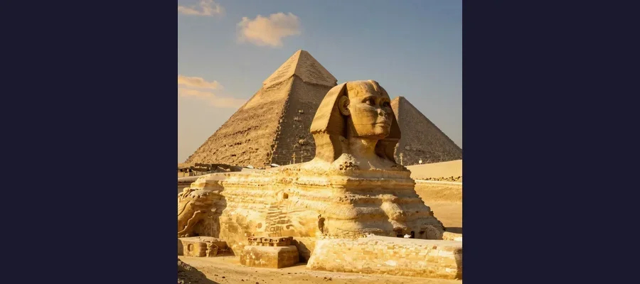

The Great Sphinx of Giza: Secrets of the World's Oldest and Largest Monument

The Great Sphinx of Giza, carved from a single limestone outcrop over 4,500 years ago. Who built it — and could it be far older than mainstream archaeology claims?
At dawn on the Giza Plateau, when the first light of the Egyptian sun catches the face of the Great Sphinx, something extraordinary happens. For a few brief minutes, the ancient limestone glows gold, and the weathered features of the world's largest monolithic statue seem almost alive — a guardian frozen mid-breath, gazing east across 4,500 years of human history. The Sphinx measures 73 meters (240 feet) long and 20 meters (66 feet) high, carved from a single ridge of limestone bedrock on the orders of an unknown pharaoh in an operation so ambitious that workers had to excavate a horseshoe-shaped trench around the outcrop just to free the body from the surrounding stone. It has sat beside the Great Pyramids for millennia, weathering sandstorms, invasions, and the slow erosion of time itself. Yet for all its enormity and its long vigil over the desert, the Sphinx refuses to answer the most basic questions about itself. Who carved it? When? Why? And what, if anything, lies hidden beneath those massive paws? The conventional answer attributes the Sphinx to Pharaoh Khafre (c. 2558–2532 BCE), builder of the second pyramid at Giza. But a passionate minority of researchers has spent three decades arguing that the geological evidence tells a radically different story — one that could push the origins of the Sphinx back thousands of years before the pyramids themselves. The debate is one of the most contentious in all of archaeology, and it shows no sign of resolution.
The Great Sphinx is not merely a statue. It is a riddle carved in stone — a monument that has captivated travelers, scholars, and mystics for thousands of years. The ancient Greeks called it the Sphinx, from their word for "strangler," but the Egyptians knew it as shesep-ankh, meaning "living image." The Romans marveled at it. Medieval Arabs venerated it. Napoleon's soldiers reportedly used it for target practice — or did they? Every generation projects its own fears and fascinations onto that enigmatic face, and every generation comes away unsatisfied. The Sphinx keeps its secrets. That is what makes it, perhaps, the most compelling ancient mystery of them all.
Carved from Living Rock: The Monument Nobody Explained
The Great Sphinx sits in a shallow enclosure on the eastern edge of the Giza Plateau, facing due east toward the rising sun. It depicts a recumbent lion with a human head wearing the royal nemes headdress of an Egyptian pharaoh. The body was carved from the natural limestone of the Giza ridge, while the outstretched paws were built up with hundreds of cut stone blocks. The original surface was coated in plaster and painted in bright reds, blues, and yellows — traces of pigment still visible near one ear. What makes the Sphinx architecturally unusual is that it was not assembled from separate blocks like the pyramids. It was carved in place from a natural outcrop, which means the sculptors had to work within the constraints of the existing rock. Flaws in the limestone were patched with mortared stones. The head, carved from a harder stratum, has weathered better than the softer body limestone.
🦁 By the Numbers: The Scale of the Sphinx
The Great Sphinx is the largest monolith statue in the world. Its dimensions are staggering: 73 meters (240 feet) long from paw to tail, 20 meters (66 feet) high from base to top of head, and 19 meters (62 feet) wide at its widest point at the haunches. The head alone is nearly 5 meters (16 feet) wide from ear to ear. The outstretched front paws are each about 15 meters (50 feet) long. It was carved from a single limestone outcrop, supplemented with masonry blocks at the paws and haunches. The excavation required to free the body from the surrounding bedrock removed an estimated hundreds of thousands of cubic feet of stone. The original surface was coated in painted plaster — traces of red pigment survive near the left ear. A royal beard once hung from the chin, fragments of which are now in the British Museum and the Cairo Museum. The scale of the project was comparable to building one of the Pyramids of Giza, yet unlike the pyramids, the Sphinx left behind no construction records, no builder's marks, and no contemporary inscriptions identifying its creator.

The Great Sphinx of Giza at dawn, with the Pyramids rising behind it. For over 4,500 years, this colossal figure has guarded the edge of the desert — and kept its secrets.
The Conventional Attribution: Pharaoh Khafre
Mainstream Egyptology attributes the Great Sphinx to Pharaoh Khafre (also known as Chephren), who ruled during the Fourth Dynasty of the Old Kingdom (c. 2558–2532 BCE) and built the second-largest pyramid at Giza. The evidence for this attribution is circumstantial but substantial. The Sphinx sits on a causeway leading from Khafre's pyramid complex, directly in front of his Valley Temple. The Sphinx Temple, located directly in front of the statue, shares architectural features with Khafre's other buildings and was constructed from blocks quarried from the Sphinx enclosure itself. A colossal statue of Khafre found nearby in the Valley Temple provides a possible facial comparison, though the Sphinx's face is so heavily eroded that identification is subjective.
The critical weakness of the Khafre attribution is the absence of any contemporary inscription naming him as the Sphinx's builder. No papyrus, no stele, no foundation deposit from Khafre's reign mentions the Sphinx. The earliest known inscription associating the Sphinx with Khafre comes from the Inventory Stele, discovered near the Sphinx in the 19th century, which describes Khafre ordering the construction of a temple near the Sphinx — but the stele itself dates to a much later period (the 26th Dynasty, c. 600 BCE) and is considered unreliable by many scholars. The attribution rests largely on proximity and architectural context — the Sphinx "belongs" to Khafre's pyramid complex because of where it sits, not because Khafre ever claimed it.
The Riddle of the Missing Nose
One of the most enduring myths about the Great Sphinx is that Napoleon Bonaparte's soldiers shot off its nose with cannons during the French campaign in Egypt in 1798. This story is almost certainly false. Detailed drawings of the Sphinx made by European travelers — including Danish naval captain Frederic Louis Norden in 1738, decades before Napoleon's birth — already show the Sphinx without its nose. Napoleon's expedition did camp near the Sphinx and conducted some of the first systematic archaeological studies of Giza, but the nose was already gone.
So who destroyed the nose? The most widely cited historical account comes from the 15th-century Arab historian al-Maqrizi, who attributed the act to a Sufi Muslim named Muhammad Sa'im al-Dahr. According to al-Maqrizi, in 1378 CE, al-Dahr was outraged that local farmers were making offerings to the Sphinx in hopes of improving their harvests — a practice he considered idolatrous. He climbed onto the Sphinx and hacked off its nose with chisels. Al-Dahr was reportedly executed for vandalism. Another account, by the earlier historian al-Ishaqi, attributes the nose's destruction to a different zealot in the 8th century. What is clear is that the nose was deliberately removed by human agency, not eroded by wind or sand. The tool marks on the nose area are consistent with deliberate chiseling. The Sphinx's ceremonial beard, which once hung from its chin, also broke off and was later recovered in fragments — portions are now housed in the British Museum and the Egyptian Museum in Cairo.
💬 The Napoleon Myth — And Other Sphinx Myths Debunked
The Napoleon nose story is just one of many myths that have accumulated around the Sphinx. Myth: Napoleon's soldiers shot off the nose. Reality: Danish explorer Norden's 1738 drawings show it was already missing. Myth: The Sphinx is aligned with the constellation Leo. Reality: The Sphinx faces due east, toward the equinox sunrise, consistent with its role as a solar symbol — no Leo alignment has been conclusively demonstrated. Myth: There is a secret chamber beneath the Sphinx containing the lost library of Atlantis. Reality: Seismic surveys have detected anomalies under the Sphinx, but excavations have revealed only natural cavities and a modest shaft — no Atlantean library has ever been found. Myth: The original face was a woman. Reality: The face wears the nemes headdress of a male pharaoh, and most scholars identify it as either Khafre or an earlier ruler — no evidence supports a female original. The Sphinx generates myths the way the desert generates sand: endlessly and unstoppably, much like the legends surrounding the lost city of Atlantis and the burning of the Library of Alexandria.

The face of the Sphinx, with the Dream Stele visible between its paws. The stele tells of a young prince who dreamed the Sphinx promised him the throne of Egypt.
The Water Erosion Controversy: A Sphinx Older Than Civilization?
In 1990, the geologist Robert M. Schoch of Boston University traveled to Egypt at the invitation of the independent researcher John Anthony West. His purpose was to examine the Sphinx from a purely geological perspective — to read the erosion patterns on the limestone the way a geologist reads the layers of a cliff face. What Schoch found changed the debate about the Sphinx forever. On the body of the Sphinx and on the walls of the Sphinx Enclosure — the horseshoe-shaped pit from which the statue was carved — Schoch identified deep fissures and undulating surfaces that he concluded could only have been produced by prolonged rainfall and water runoff. This was not the wind erosion that had shaped other Old Kingdom structures at Giza. Wind erosion produces sharp, angular cuts and layered patterns. The erosion on the Sphinx enclosure walls showed the rounded, rolling profiles typical of water weathering.
The problem was immediately obvious. The Giza region has been hyper-arid for approximately 5,000 years. If the erosion on the Sphinx was caused by rainfall, then the Sphinx must predate the aridification of the Sahara — pushing its construction back to at least 5000 BCE, and possibly to the end of the last Ice Age, around 10,000 BCE. This was thousands of years before the conventional date of Khafre's reign, and thousands of years before the invention of writing, monumental architecture, or the Egyptian state. Schoch's hypothesis was explosive. If correct, it meant that an advanced civilization capable of carving the world's largest stone statue existed in Egypt at least 3,000 years before the earliest known dynastic culture.
The Mainstream Response
Egyptologists and geologists pushed back hard. Critics pointed out that the Sphinx enclosure fits neatly into the overall layout of Khafre's pyramid complex, with its causeway, Valley Temple, and Sphinx Temple forming an integrated architectural plan. Geological studies showed that limestone from the Sphinx enclosure was used to construct the Sphinx Temple and portions of Khafre's Valley Temple — suggesting they were built at the same time. Geologist James Harrell argued that the erosion patterns could be explained by Nile flooding and occasional heavy rains that persisted into the Dynastic period, not by a prehistoric deluge. Other researchers attributed the patterns to haloclasty — salt crystallization within the limestone pores, which produces rounded weathering profiles similar to water erosion. The Wikipedia article on the Sphinx water erosion hypothesis classifies it as a "fringe theory," noting that most archaeologists and Egyptologists reject the idea of an earlier construction date. Schoch's hypothesis was also linked to the Edgar Cayce readings, which claimed that Atlantean refugees built the Sphinx and the Great Pyramid around 10,500 BCE — an association that further damaged its credibility among mainstream scholars.
🔍 Hidden Chambers: What Lies Beneath the Sphinx?
The possibility of hidden chambers beneath the Great Sphinx has fueled speculation for centuries. In the 1990s, a team led by geophysicist Thomas Dobecki and funded by the Edgar Cayce Foundation conducted seismic surveys around the Sphinx, using ground-penetrating radar and acoustic sounding. They reported detecting a rectangular cavity approximately 25 feet beneath the Sphinx's paws, measuring about 12 feet wide and 30 feet long, which appeared to be an artificial chamber. They also detected what appeared to be a tunnel running from the chamber toward the south. The Egyptian government initially granted permission for further investigation but later halted the project, citing concerns about the structural integrity of the Sphinx. The so-called Schutt Shaft — a vertical shaft on the Sphinx's back, behind the head — was cleared and explored but revealed only a modest cavity filled with debris. The British explorer Henry Salt opened a shaft behind the Sphinx in the early 19th century but found nothing significant. To date, no hidden chamber of any importance has been conclusively documented beneath the Sphinx, though the seismic anomalies remain unexplained and continue to fuel speculation. The mystery of what lies beneath is as persistent as the mysteries surrounding the tomb of Tutankhamun and the Rosetta Stone's lost companions.
The Dream Stele and the Guardian of the Sun
Between the outstretched paws of the Sphinx sits one of the most evocative monuments of ancient Egypt — the Dream Stele (also called the Sphinx Stele), a granite slab erected by Pharaoh Thutmose IV around 1400 BCE, more than a thousand years after the Sphinx was (conventionally) built. The stele tells the story of the young prince Thutmose, who was not the heir to the throne but was out hunting on the Giza Plateau. Exhausted, he lay down to rest in the shadow of the Sphinx, which at the time was buried up to its neck in sand. As he slept, the Sphinx appeared to him in a dream and spoke: "I will give you the throne of Upper and Lower Egypt, if you will clear the sand from my body and restore me." The prince awoke, cleared the sand, restored the Sphinx, and — as the dream had promised — became pharaoh.
The Dream Stele is remarkable for what it reveals about the Sphinx's role in Egyptian religion and for what it does not reveal about the Sphinx's origins. By Thutmose IV's time, the Sphinx was already so ancient that it was buried in sand up to its neck and its original purpose had been forgotten. Thutmose's inscription does not name the Sphinx's builder — a telling omission. The stele does mention Khafre, but the relevant section is damaged, and scholars debate whether Thutmose was attributing the Sphinx to Khafre or simply describing Khafre's temple complex nearby. The stele is the earliest surviving text that directly connects a pharaoh to the Sphinx, and it portrays the statue as a manifestation of the sun god Horemakhet ("Horus in the Horizon"), linking the Sphinx to the Egyptian solar cult that would endure for millennia.
Key Facts About the Great Sphinx
- Length: 73 meters (240 feet) — roughly the width of a football field
- Height: 20 meters (66 feet) — as tall as a six-story building
- Material: Carved from a single limestone outcrop on the Giza Plateau
- Conventional date: Circa 2558–2532 BCE, during the reign of Pharaoh Khafre
- Alternative date: Some researchers argue water erosion suggests a date before 5000 BCE
🌞 The Guardian That Will Not Speak
The Great Sphinx of Giza has stared east across the desert for longer than any other monumental sculpture in human history. It has been buried to its neck in sand and excavated. Its nose has been hacked off by zealots and its beard has broken away. It has been worshipped as a god, ignored as a curiosity, and dynamited by iconoclasts. It has weathered — or so the conventional story goes — 4,500 years of wind, sand, and human folly. Or it has weathered far longer than that, as the erosion patterns on its enclosure walls may testify. The debate between mainstream Egyptologists and the geological dissidents will not be resolved soon. What is beyond debate is the Sphinx's power as a symbol — a symbol of the mystery at the heart of the ancient world, of the limits of our knowledge, of the vast stretches of time that separate us from the civilization that carved it. Every theory about the Sphinx tells us as much about the theorizer as about the statue. Mainstream scholars see it as a product of the Old Kingdom — impressive, but comprehensible within the framework of known Egyptian history. Alternative researchers see it as evidence of a lost chapter in the human story — a civilization that rose and fell before the pharaohs, leaving behind only this one enigmatic monument. The truth, as always, may lie somewhere in between, or it may be stranger than either camp imagines. The Sphinx, for its part, keeps its silence. It has kept it for thousands of years. It will likely keep it for thousands more. That silence, more than any theory or discovery, is the true mystery of the Great Sphinx of Giza — a mystery as enduring as the ancient wonders described in the Antikythera Mechanism, as haunting as the buried army immortalized at the tomb of China's first emperor, and as awe-inspiring as the frozen ruins of Pompeii.
Frequently Asked Questions
Who built the Great Sphinx of Giza?
Conventional Egyptology attributes the Great Sphinx to Pharaoh Khafre (c. 2558–2532 BCE), who built the second pyramid at Giza. The Sphinx sits on a causeway leading from Khafre's pyramid complex, and the adjacent Sphinx Temple was built from stone quarried from the Sphinx enclosure. However, no contemporary inscription identifies Khafre as the builder. The earliest textual association between Khafre and the Sphinx comes from much later sources. Geologist Robert Schoch and others have argued that the erosion patterns on the Sphinx suggest it could be far older, possibly dating to before 5000 BCE.
What happened to the Sphinx's nose?
The nose was deliberately removed, not eroded by weather. The popular story that Napoleon's soldiers shot it off with cannons in 1798 is false — European drawings from 1738 already show the Sphinx without its nose. The 15th-century Arab historian al-Maqrizi attributed the act to a Sufi zealot named Muhammad Sa'im al-Dahr, who hacked off the nose in 1378 CE with chisels, outraged that local farmers were making offerings to the statue. Al-Dahr was reportedly executed for the act.
What is the water erosion hypothesis?
The Sphinx water erosion hypothesis, proposed by geologist Robert Schoch in the 1990s, argues that the deep fissures and undulating erosion patterns on the Sphinx enclosure walls were caused by prolonged rainfall, not wind or sand. Since the Giza region has been arid for approximately 5,000 years, Schoch concluded that the Sphinx must predate the aridification of the Sahara — pushing its construction back to at least 5000 BCE, and possibly to around 10,000 BCE. Mainstream Egyptologists reject this hypothesis, attributing the erosion to wind, salt weathering, or occasional Nile flooding.
Are there hidden chambers under the Sphinx?
Seismic surveys conducted in the 1990s detected what appeared to be a rectangular cavity about 25 feet beneath the Sphinx's paws, measuring roughly 12 by 30 feet. However, the Egyptian government halted further investigation, citing structural concerns. The so-called Schutt Shaft on the Sphinx's back was explored but revealed nothing significant. No hidden chamber of importance has been conclusively documented beneath the Sphinx, though the seismic anomalies remain unexplained.
📖 Recommended Reading
Want to learn more? Check out The Message of the Sphinx by Graham Hancock on Amazon for a deeper dive into this fascinating topic. (As an Amazon Associate, we earn from qualifying purchases.)
References & Further Reading
- Wikipedia: Great Sphinx of Giza — Comprehensive article on the Sphinx's dimensions, history, and archaeological context
- Wikipedia: Sphinx Water Erosion Hypothesis — Detailed coverage of Robert Schoch's controversial theory and mainstream critiques
- Wikipedia: Dream Stele — The inscription of Thutmose IV describing his dream at the feet of the Sphinx
- Wikipedia: Khafre — The pharaoh conventionally credited with building the Great Sphinx
- Robert Schoch: The Great Sphinx — The geologist's own account of his research and findings at Giza
- Wikipedia: Hypatia of Alexandria — For context on Alexandria's intellectual tradition near Giza
Editorial note: reconstructions are continuously revised as imaging and inscription studies improve. See our Editorial Policy.